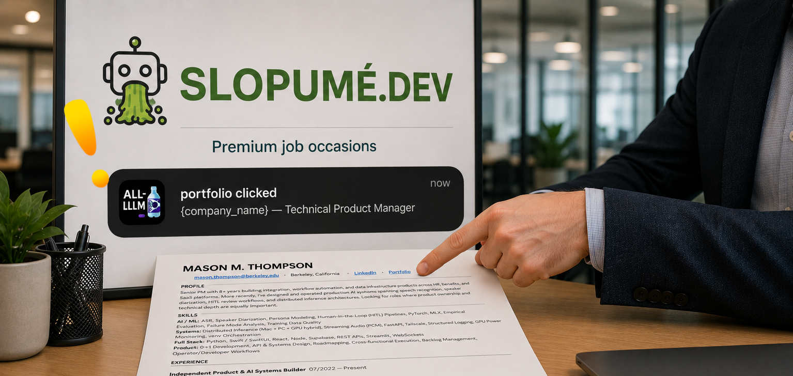
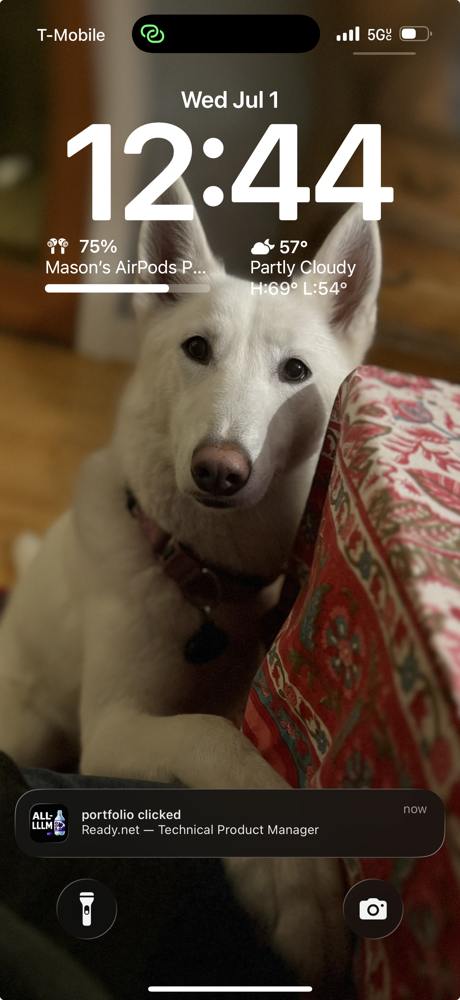

Observability · Attribution Tokens · Push Notifications
Resume Intelligence - from Slopeumé.dev

2026-07-03
I'm job hunting and things are in "hurry up and wait" mode heading into the weekend. In years past, what helped keep the momentum of the search going was the occasional LinkedIn notification: "Soandso has viewed your profile." These days, it's mostly notifications that people in my network are playing LinkedIn Games.
I've sent out a reasonable number of applications and my LinkedIn profile views have increased, but overwhelmingly those views are from people browsing in private mode, which apparently doesn't trigger notifications. Private views are understandable, but they make it difficult to know whether someone is responding to an application or if it's random noise. The big question is whether my resume is making it in front of a human or being filtered out by an ATS.
77.6%
21.3%
1.1%
Of the companies I've applied to, so far only two have rejected me. A brief report on that is at the bottom of the page (if you're interested).
Is my resume actually making it in front of a recruiter?
Answer
I can test that.
Today, every resume I generate in Slopeumé.dev, a job aggregator and application management tool I built a couple of months ago—contains unique, application-specific attribution tokens embedded in my Portfolio and LinkedIn links.
BT dubs: • LinkedIn
PortfolioATS platforms almost certaintly screen resume URLs for safety and verify that hyperlink text matches the underlying destination, so there's no guarantee my attribution-tokens remain intact during parsing.
Assuming everything survives intact, the resume displays LinkedIn and Portfolio as standard blue hyperlinks. When one of those links is clicked, Slopumé records the click event before immediately redirecting to the intended resource. For the person who clicked the link, the website loads exactly as normal.

+-------------------+-----------+--------------------------------------+
| STAGE | TOOL | FUNCTION |
+-------------------+-----------+--------------------------------------+
| Resume Generation | Slopume | Creates application-specific links |
| Link Routing | Vercel | Captures click before redirect |
| Event Logging | Supabase | Records company, target, timestamp |
| Notification | iOS App | Banner push notification |
+-------------------+-----------+--------------------------------------+
PRODUCT FLOW
Resume submitted
│
▼
Recruiter clicks custom link
│
├──────────────► Portfolio / LinkedIn / Email
│
└──────────────► Vercel
│
▼
Supabase
│
▼
iOS Push Notification
│
▼
Mason 📱
{
"token": "Ql28rMgb723o8eeiqgndeQ",
"referer": "",
"artifact": "resume",
"link_type": "portfolio",
"user_agent": "Mozilla/5.0 (Macintosh; Intel Mac OS X 10_15_7)...",
"destination": "https://pdf-sorcerer.github.io/alp/welcome.html"
}
Application Forensics · Rejection Comparison
View Application Comparison
★★★★★ Applied AI Systems
★★★★★ Workflow Automation
★★★★★ AI Evaluation
★☆☆☆☆ Spend Management
★☆☆☆☆ Accounting Operations
"Although your experience is impressive, we have received many qualified applicants for the role."
The application concluded before a recruiter phone screen. Based solely on the available evidence, the specific reason for the rejection cannot be established.
★★★★★ AI Evaluation
★★★★★ Human-in-the-Loop Systems
★★★★★ Technical Product Management
★☆☆☆☆ Compensation Systems
★☆☆☆☆ Incentive Design
★☆☆☆☆ Global Payments
The application concluded before recruiter interaction. Based solely on the available evidence, the specific reason for the rejection cannot be established.